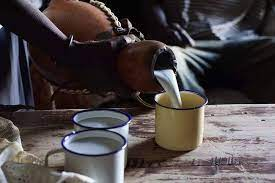

Mursik

Prepairing Mursik
This is an indigenous drink from Kalenjin land in Africa
Ingredients
- 1 litre fresh milk(cow milk)
- 500 ml mala(fermented milk)
- Sotet(sooter)
Cooking Steps
- Boil fresh cow milk (strictly unprocessed / pasteriuzed) and allow it cool completely
- Add mala preferably kcc(this is not amust but highly recommended to fasten the process)
- Thoroughly mix the mala to the milk Pour the mixture gourd(sotet) to a complete with a special soot from a tree called itet and allow it to rest for two days
- Shake the sotet properly before pouring the mursik Enjoy it with millet ugali and managu